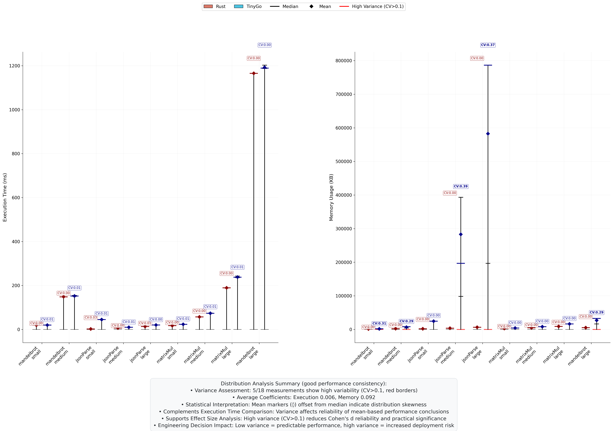

Distribution & Variance Analysis: Performance Consistency
Box plots show data distribution, variance, and stability patterns for engineering decision-making.
Box plots show data distribution, variance, and stability patterns for engineering decision-making.
Stability Score: 86.1%
High Variance Ratio: 13.9%
Risk Level: Moderate
Consistency Leader: Rust
Stability Score: 100.0%
Avg Execution CV: 0.005
Avg Memory CV: 0.000
High Variance Count: 0
Stability Score: 72.2%
Avg Execution CV: 0.007
Avg Memory CV: 0.184
High Variance Count: 5
| Task | Scale | Rust (ms) | TinyGo (ms) | Speed Advantage | Memory Advantage | Overall Recommendation |
|---|---|---|---|---|---|---|
| jsonParse | small | 2.2 | 45.1 | Rust 95.2% faster | No significant difference | üëç Moderate recommendation: rust (strong performance advantage) |
| jsonParse | medium | 6.5 | 9.8 | Rust 34.0% faster | Rust 98.7% less memory | üî• Strong recommendation: rust (consistent winner in both metrics) |
| jsonParse | large | 13.2 | 20.1 | Rust 34.7% faster | Rust 98.9% less memory | üî• Strong recommendation: rust (consistent winner in both metrics) |
| mandelbrot | small | 19.3 | 19.8 | Rust 2.8% faster | No significant difference | üëç Moderate recommendation: rust (strong performance advantage) |
| mandelbrot | medium | 148.4 | 152.3 | Rust 2.5% faster | Rust 66.7% less memory | üî• Strong recommendation: rust (consistent winner in both metrics) |
| mandelbrot | large | 1165.6 | 1192.5 | Rust 2.3% faster | Rust 80.5% less memory | üî• Strong recommendation: rust (consistent winner in both metrics) |
| matrixMul | small | 17.3 | 23.2 | Rust 25.5% faster | No significant difference | üëç Moderate recommendation: rust (strong performance advantage) |
| matrixMul | medium | 56.9 | 73.7 | Rust 22.7% faster | No significant difference | üëç Moderate recommendation: rust (strong performance advantage) |
| matrixMul | large | 189.1 | 237.9 | Rust 20.5% faster | No significant difference | üëç Moderate recommendation: rust (strong performance advantage) |
Based on comprehensive performance analysis, **Rust is recommended** for WebAssembly applications requiring optimal performance. Rust demonstrates superior performance with 9 execution time wins and 4 memory efficiency wins across 9 benchmark scenarios.
Hardware: AWS EC2 c7g.2xlarge (4 CPU, 16GB RAM)
Operating System: Ubuntu 22.04 (Linux/x86_64)
Browser: Headless Chromium 140+ (Puppeteer 24+)
Language Toolchains:
Rust (Bare Interface):
TinyGo:
Mandelbrot: CPU floating-point intensive (256×256 to 1024×1024)
JSON Parsing: Structured data processing (5K to 30K records)
Matrix Multiplication: Dense numerical computation (256×256 to 576×576)
Verification: FNV-1a hash consistency across languages
Progressive GC pressure design across scales:
Rust: Zero-cost abstractions, compile-time memory management, no GC overhead
TinyGo: Garbage collector with GC pauses and allocation overhead
Rust: Steeper learning curve, longer compile times, complex dependency management
TinyGo: GC pauses affect latency-critical applications, limited Go standard library